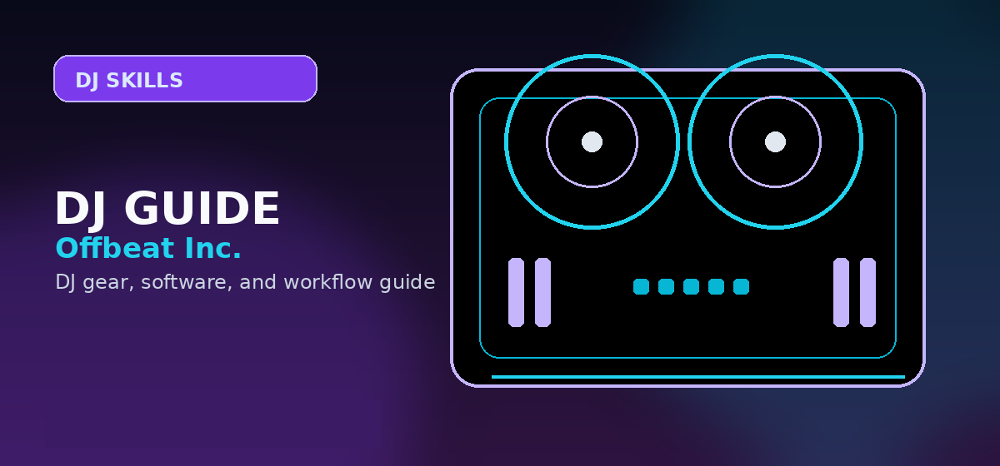

Best DJ Apps for iPhone and iPad 2026: Top Picks for Mobile Mixing
Comprehensive guide to best DJ apps iPhone iPad 2026 djay algoriddim cross serato mobile with practical recommendations and current buying notes — updated 2026.

Disclosure: This page uses affiliate links. We may earn a commission at no extra cost to you. Full disclosure →
In 2026, the line between a mobile device and a professional DJ booth has almost entirely vanished. With the M-series chips in iPads and the processing power of the latest iPhones, mobile DJing is no longer just for "bedroom hobbyists." Today's apps leverage sophisticated AI for real-time stem separation, seamless cloud integration with Apple Music and Tidal, and near-zero latency. Whether you are performing a pop-up set at a café or practicing transitions on your commute, the right software can transform your iOS device into a potent musical instrument. This guide analyzes the top contenders—Algoriddim djay, Serato Mobile, and Cross DJ—to help you determine which ecosystem fits your workflow, budget, and ambition in the current mobile landscape.
Algoriddim djay: The AI Powerhouse
Algoriddim djay remains the gold standard for iOS in 2026, primarily due to its industry-leading Neuralmix technology. This AI-driven engine allows DJs to isolate vocals, drums, and instruments in real-time, enabling creative mashups that were previously impossible on a tablet. Its integration with Apple Music and Tidal makes it the most versatile app for those who rely on streaming libraries rather than local files. The interface is meticulously designed for the iPad Pro, utilizing the large screen for expansive waveforms and intuitive touch controls. While the subscription model is higher than competitors, the sheer depth of features—including professional-grade effects and extensive hardware support—justifies the cost for anyone serious about mobile performance.
Serato Mobile: The Professional's Entry Point
Serato Mobile serves as the perfect gateway into the world’s most popular DJ ecosystem. Unlike the feature-heavy djay, Serato Mobile focuses on a streamlined, "no-nonsense" mixing experience. It is designed for DJs who want to get playing immediately without diving into complex menus. The app excels in stability and provides a tactile feel that mirrors the Serato DJ Pro experience on desktop. For beginners, it offers a low-friction entry point to learn the basics of beatmatching and EQing. While it lacks the advanced AI stems of Algoriddim, its seamless transition path to professional hardware and software makes it an essential choice for those planning to eventually move into a full club setup.
Cross DJ: Precision and Performance
Cross DJ is the choice for the "purist" who values precision over flash. In 2026, it continues to be praised for its superior waveform analysis and rock-solid synchronization. While other apps may lean heavily on AI automation, Cross DJ provides tools that encourage a more manual, skill-based approach to mixing. Its interface is clean and highly responsive, making it ideal for fast-paced sets where every millisecond counts. It is particularly well-regarded for its stability during long sessions, avoiding the crashes that can plague more bloated software. For the DJ who wants a reliable, high-performance tool that stays out of the way of the music, Cross DJ is the most efficient option available.
Pairing Apps with Budget Hardware
To truly unlock the potential of these apps, pairing them with affordable hardware is key. In 2026, the market for budget DJ equipment under $300 has exploded, offering controllers with touch-capacitive jogs and built-in audio interfaces. Using an iPad as the "brain" paired with a budget-friendly controller allows you to maintain the portability of a mobile setup while gaining the tactile precision of physical faders and knobs. Whether you are using a compact Pioneer unit or a budget-friendly Numark controller, these apps bridge the gap between a touch screen and a professional booth. This hybrid approach is currently the most cost-effective way for beginners to enter the scene without sacrificing professional sound quality.
Comparison at a Glance
| App | Pricing (Approx.) | Best For | Key Feature | Hardware Support |
|---|---|---|---|---|
| djay | $9.99/mo (Pro) | Pro/Creative | Neuralmix AI Stems | Extensive |
| Serato Mobile | Free / $4.99/mo | Beginners | Ecosystem Sync | Moderate |
| Cross DJ | $19.99 (One-time) | Purists | Waveform Precision | High |
iPad vs. Android DJ Apps: Platform Differences
iPad dominates the DJ app market because of consistent hardware specs, better Bluetooth latency, and Core Audio support. Android apps exist but are highly fragmented across device manufacturers — latency can vary wildly depending on your tablet model. If you're serious about iPad DJing, invest in iPad Air or iPad Pro (2023+) for stable performance. Older iPads suffer lag and dropouts. Most professional apps prioritize iOS development, rolling out features to Android months later. For beginners, iPad is the safe choice; Android only if you already own a compatible tablet.
Setting Up Your iPad DJ Booth
Hardware placement matters. Your iPad needs a stable stand (floor stand or tabletop adjustable mount) at eye level so you can watch the waveform and read energy cues. Most DJ booths have limited depth, so choose a compact stand. Mount it where you can reach the faders and pads without hunching. Consider cable management: USB-C or Lightning to audio interface, power supply for charging during long sessions, and Bluetooth receiver placement if using wireless headphones. Pro setup takes 10 minutes, transforms your experience from "using an iPad" to "performing with professional gear."
Library Management and Cloud Syncing
iPad DJ apps sync music libraries differently. djay works with Spotify + Apple Music seamlessly, letting you search millions of tracks live. Serato Mobile syncs with your desktop Serato library via WiFi (requires paid subscription). Cross DJ requires local files on the iPad. Consider your music workflow: if you use streaming (Spotify), djay is best. If you have a personal crate (MP3s, WAVs), Cross DJ or Serato Mobile works. Plan for storage: a 256GB iPad easily holds 500+ tracks at highest quality. Most DJs keep core tracks on the device and stream secondary selections for flexibility.
Live Performance and Latency Considerations
Latency (the delay between touching the iPad and hearing the sound) is critical for DJing. Quality iPad apps achieve 20–40ms latency via optimized Core Audio, which is professional-grade. Cheap or poorly optimized apps can have 100+ms latency, making mixing impossible. Test latency in the app settings before purchasing. Always carry a USB cable and laptop backup — technology fails on stage. The iPad is your primary tool, but a wired backup (Serato on laptop) prevents set-ending disasters.
Quick Verdict
- Choose djay if you want the absolute best features, AI stem separation, and deep streaming integration.
- Choose Serato Mobile if you are a beginner wanting a simple start or are already invested in the Serato ecosystem.
- Choose Cross DJ if you prefer a stable, precise tool with a one-time purchase option and a focus on manual skill.
Ready to take your mobile mixing to the next level? Whether you choose the AI power of djay or the streamlined flow of Serato, the best time to start is now. Check out our recommended gear and software links below to grab the latest deals on iOS DJ apps and budget-friendly controllers to build your dream mobile rig.
Bottom line: djay Pro AI is the best DJ app for iPad in 2026 -- Neural Mix stem splitting, Spotify/Tidal integration, and Apple Silicon-optimised performance. For offline-first use without subscription, Cross DJ is the reliable alternative. Complete your setup with a controller →
Shop on Amazon
Mount your iPad for DJing — check Amazon for tablet stands and iPad DJ accessories.
Content verified and updated for 2026. All product links checked for availability and pricing accuracy.
Have a question not covered in the FAQ? Check our DJ Software FAQ or Beginner DJ Hub for more information.
Frequently Asked Questions
What is the best DJ app for iPad?
djay Pro AI by Algoriddim is the top-rated DJ app for iPad. It features AI stem separation, Serato Sync integration, and full support for external controllers via USB or Bluetooth.
Can you DJ professionally on an iPad?
Yes. Many mobile and event DJs use iPads with djay Pro AI and a Bluetooth controller. The setup is lightweight and surprisingly capable for smaller venues.
Does Serato work on iPad?
Serato DJ does not natively run on iPad. However, djay Pro AI supports Serato Library integration so you can access Serato-prepared tracks on your iPad.
Is djay Pro AI free?
djay Pro AI has a free trial. Full access costs $4.99/month or $49.99/year. It's available for iOS, iPadOS, macOS, and Windows.
What controller works with iPad for DJing?
Popular options include the Reloop Buddy, Pioneer DDJ-200, and Numark DJ2GO2 Touch. These connect via USB camera adapter or Bluetooth to iPad running djay Pro.